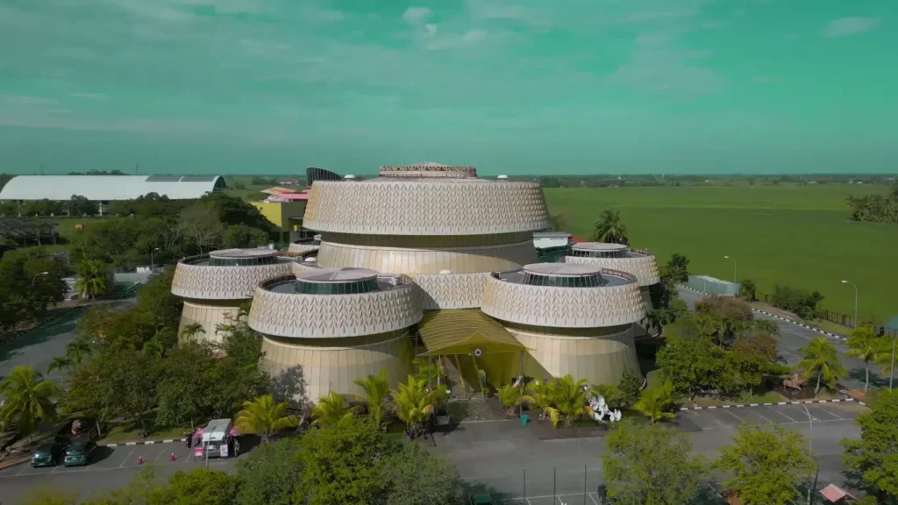

Perkhidmatan Atas Talian
Selamat datang ke laman Perkhidmatan Atas Talian kami. Di sini, anda boleh mengakses pelbagai perkhidmatan yang ditawarkan oleh Muzium Padi secara dalam talian. Kami komited untuk menyediakan pengalaman yang mudah dan efisien bagi semua pengunjung kami. Dengan perkhidmatan atas talian, anda boleh mendapatkan maklumat, membuat tempahan, dan banyak lagi tanpa perlu meninggalkan rumah anda.
